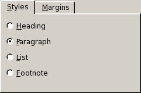
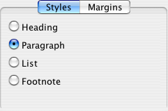

| Home · All Classes · Main Classes · Grouped Classes · Modules · Functions |
The QTabWidget class provides a stack of tabbed widgets. More...
#include <QTabWidget>
Inherits QWidget.
The QTabWidget class provides a stack of tabbed widgets.
A tab widget provides a tab bar (see QTabBar) and a "page area" that is used to display pages related to each tab. By default, the tab bar is shown above the page area, but different configurations are available (see TabPosition). Each tab is associated with a different widget (called a page). Only the current page is shown in the page area; all the other pages are hidden. The user can show a different page by clicking on its tab or by pressing its Alt+letter shortcut if it has one.
The normal way to use QTabWidget is to do the following in the constructor:
The position of the tabs is defined by tabPosition, their shape by tabShape.
The signal currentChanged() is emitted when the user selects a page.
The current page index is available as currentIndex(), the current page widget with currentWidget(). You can retrieve a pointer to a page widget with a given index using widget(), and can find the index position of a widget with indexOf(). Use setCurrentWidget() or setCurrentIndex() to show a particular page.
You can change a tab's text and icon using setTabText() or setTabIcon(). A tab can be removed with removeTab().
Each tab is either enabled or disabled at any given time (see setTabEnabled()). If a tab is enabled, the tab text is drawn normally and the user can select that tab. If it is disabled, the tab is drawn in a different way and the user cannot select that tab. Note that even if a tab is disabled, the page can still be visible, for example if all of the tabs happen to be disabled.
Tab widgets can be a very good way to split up a complex dialog. An alternative is to use a QStackedWidget for which you provide some means of navigating between pages, for example, a QToolBar or a QListWidget.
Most of the functionality in QTabWidget is provided by a QTabBar (at the top, providing the tabs) and a QStackedWidget (most of the area, organizing the individual pages).


See also QTabBar, QStackedWidget, and QToolBox.
This enum type defines where QTabWidget draws the tab row:
| Constant | Value | Description |
|---|---|---|
| QTabWidget::North | 0 | The tabs are drawn above the pages. |
| QTabWidget::South | 1 | The tabs are drawn below the pages. |
| QTabWidget::West | 2 | The tabs are drawn to the left of the pages. |
| QTabWidget::East | 3 | The tabs are drawn to the right of the pages. |
This enum type defines the shape of the tabs:
| Constant | Value | Description |
|---|---|---|
| QTabWidget::Rounded | 0 | rounded look (normal) |
| QTabWidget::Triangular | 1 | triangular look |
This property holds the number of tabs in the tab bar.
Access functions:
This property holds the index position of the current tab page.
Access functions:
This property holds the position of the tabs in this tab widget.
Possible values for this property are QTabWidget::North and QTabWidget::South.
Access functions:
See also TabPosition.
This property holds the shape of the tabs in this tab widget.
Possible values for this property are QTabWidget::Rounded (default) or QTabWidget::Triangular.
Access functions:
See also TabShape.
Constructs a tabbed widget with parent parent.
Destroys the tabbed widget.
Adds another tab and page to the tab view.
The new page is child; the tab's label is label.
If the tab's label contains an ampersand, the letter following the ampersand is used as a shortcut for the tab, e.g. if the label is "Bro&wse" then Alt+W becomes a shortcut which will move the focus to this tab.
See also insertTab().
This is an overloaded member function, provided for convenience. It behaves essentially like the above function.
Adds another tab and page to the tab view.
This function is the same as addTab(), but with an additional icon.
Returns the widget shown in the corner of the tab widget or 0.
See also setCornerWidget().
This signal is emitted whenever the current page index changes. The parameter is the new current page index position.
See also currentWidget() and currentIndex.
Returns a pointer to the page currently being displayed by the tab dialog. The tab dialog does its best to make sure that this value is never 0 (but if you try hard enough, it can be).
See also currentIndex() and setCurrentWidget().
Returns the index position of the page occupied by the widget w, or -1 if the widget cannot be found.
Inserts another tab and page to the tab view.
The new page is w; the tab's label is label. Note the difference between the widget name (which you supply to widget constructors and to setTabEnabled(), for example) and the tab label. The name is internal to the program and invariant, whereas the label is shown on-screen and may vary according to language and other factors.
If the tab's label contains an ampersand, the letter following the ampersand is used as a shortcut for the tab, e.g. if the label is "Bro&wse" then Alt+W becomes a shortcut which will move the focus to this tab.
If index is out of range, the tab is simply appended. Otherwise it is inserted at the specified position.
If you call insertTab() after show(), the screen will flicker and the user may be confused.
See also addTab().
This is an overloaded member function, provided for convenience. It behaves essentially like the above function.
Inserts another tab and page to the tab view.
This function is the same as insertTab(), but with an additional icon.
Returns true if the the page at position index is enabled; otherwise returns false.
See also setTabEnabled() and QWidget::isEnabled().
Paints the tab widget's tab bar in response to the paint event.
Reimplemented from QWidget.
Removes the page at position index from this stack of widgets. Does not delete the page widget.
Sets widget w to be the shown in the specified corner of the tab widget.
Only the horizontal element of the corner will be used.
See also cornerWidget() and setTabPosition().
Makeswidget the current widget. The widget must be a page in this tab widget.
See also addTab(), setCurrentIndex(), and currentWidget().
Replaces the dialog's QTabBar heading with the tab bar tb. Note that this must be called before any tabs have been added, or the behavior is undefined.
See also tabBar().
If enable is true, the page at position index is enabled; otherwise the page at position index is disabled. The page's tab is redrawn appropriately.
QTabWidget uses QWidget::setEnabled() internally, rather than keeping a separate flag.
Note that even a disabled tab/page may be visible. If the page is visible already, QTabWidget will not hide it; if all the pages are disabled, QTabWidget will show one of them.
See also isTabEnabled() and QWidget::setEnabled().
Sets the icon for the tab at position index.
See also tabIcon().
Defines a new label for the page at position index's tab.
See also tabText().
Sets the tab tool tip for the page at position index to tip.
See also tabToolTip().
Returns the current QTabBar.
See also setTabBar().
Returns the label text for the tab on the page at position index.
See also setTabIcon().
This virtual handler is called after a new tab was added or inserted at position index.
See also tabRemoved().
This virtual handler is called after a tab was removed from position index.
See also tabInserted().
Returns the label text for the tab on the page at position index.
See also setTabText().
Returns the tab tool tip for the page at position index or an empty string if no tool tip has been set.
See also setTabToolTip().
Returns the tab page at index position index or 0 if the index is out of range.
| Copyright © 2005 Trolltech | Trademarks | Qt 4.0.1 |